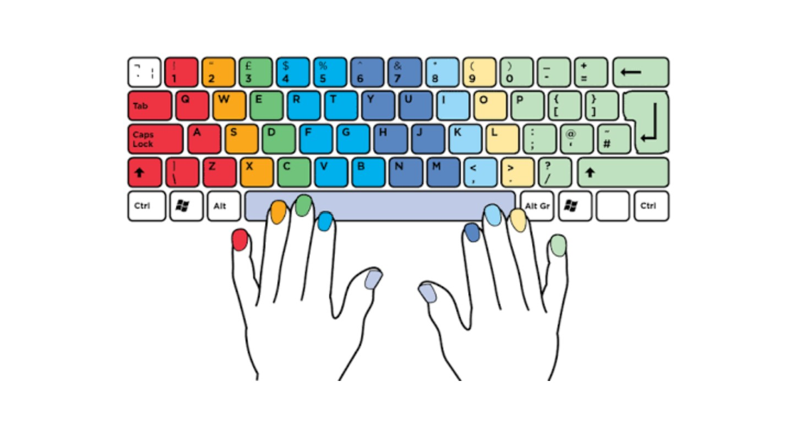

With TopTyper, Cindy dreams to become a developer - Paul -
how to get started
1
Create your account
2
Type hard!
3
compete scores with friends

WHAT IS TopTyper ?
TopTyper is the most fun way to practice typing
developed by David, Jinhwa, Justin and Shane who have strong passion to help people to enjoy typing.
TopTyper is open for everyone